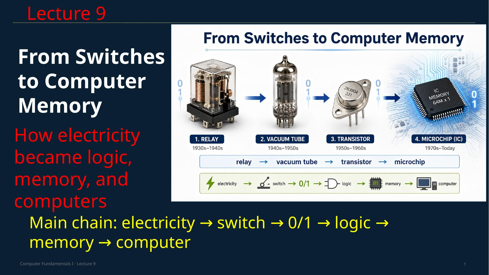

Today we move from electricity to computers.
We will not start with the screen.
We will not start with the keyboard.
We will start with a very simple physical idea: a switch.
A switch can be OFF or ON.
A computer uses this simple idea many millions or billions of times.
The main chain today is this:
electricity becomes a switch,
a switch becomes 0 and 1,
0 and 1 become logic,
logic becomes memory and calculation,
and all of this becomes a computer.
So, today, we study how physics became computer hardware.
Think and answer
What is the main chain of this lecture?
Show answer
electricity → switch → 0/1 → logic → memory → computer.